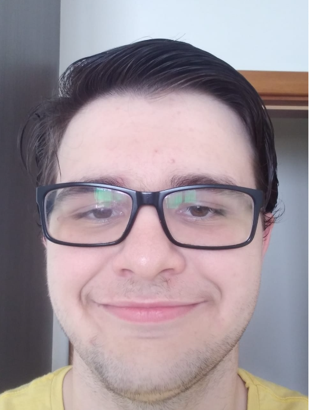

Aluno de ciências da computação
Tenho 18 anos, e nasci dia 22 de dezembro de 2005 nos EUA, vivo com meus pais, e tenho um irmão gosto muito de jogar video games e assistir animes no meu tempo livre gosto de alguns esportes também, como: vôlei e ping pong, gosto muito de ler também, é um dos meus passa-tempos favoritos, tenho um humor bem quebrado e rio de qualquer coisa, entrei no curso de ciência da computação pois, além de ser o único curso que me interessou, é um curso que está bem em alta no momento então decidi dar um chance.
Terminei o Ensino Médio no Godofredo Schenneider, e fiz e terminei o curso de pré-enem na estácio, também fiz um curso de inglês, não cheguei a terminar, porém sai quando faltava apenas 3 meses para se encerrar, então consigo dizer que tenho um inglês avançado, platinei hollow knight.